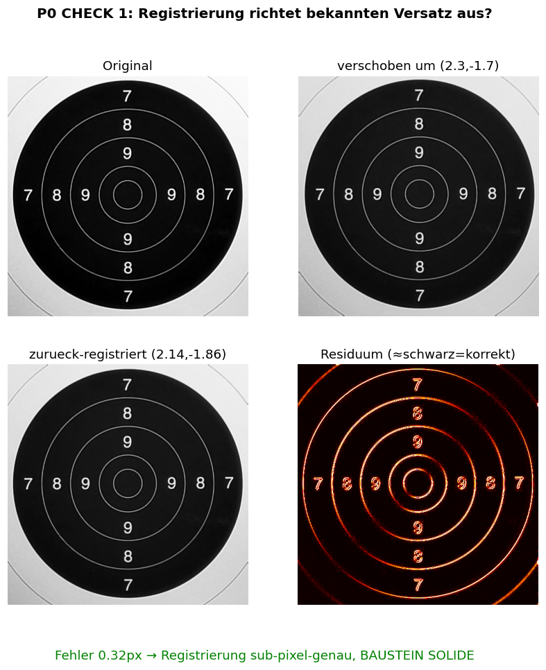

Datum: 2026-06-11 · Auslöser: Der Nutzer fand durch zufälliges Hinschauen einen eklatanten Fehler in der Analysebasis (ein „Modell" aus Quadraten). Daraufhin: Stopp, Audit, verifizierte Rework.
Bei allen bisherigen Offline-Algorithmus-Tests hatte sich der Nutzer „blind" auf meine geht/geht-nicht-Voten verlassen. Beim ersten eigenen Blick auf ein Zwischenbild fand er sofort einen groben Fehler. Das ist das Urteil über meine bisherige Selbstkontrolle: Ich habe End-Ergebnisse gegen Ground Truth geprüft, aber nie die innere Korrektheit der Pipelines — ich habe Zwischenstufen (Modelle, Residuen, Registrierungen) nie angeschaut. Eine Kennzahl kann glänzen, während die Rechnung dahinter Müll ist.
| Check | Methode | Ergebnis |
|---|---|---|
| Registrierung | bekannten Sub-Pixel-Versatz (2.3, −1.7) ausrichten + zurückrechnen | Fehler 0.32px → sub-pixel-genau, SOLIDE |
| Detektor | synthetisch gepflanztes .22-Loch finden | exakt lokalisiert (0px) → SOLIDE |
| Kalibrierung | roten Kreis über Spiegel (Nutzer-Sichtprüfung) | A/0603 korrekt; B leicht versetzt; C357 grob daneben |

P0-Check 1: Registrierung. Residuum (rechts unten) fast schwarz = Versatz korrekt zurückgerechnet.
Folgerung: Die globale Registrierung ist solide. Der Fehler steckte spezifisch in einer kaputten Block-Registrierung (40px-Kacheln einzeln verschoben → Kachel-Artefakte, das „Quadrate-Modell"), nicht im Grundverfahren.
Statt gegen ein gerechnetes Modell: das Schlussbild gegen die echte unbeschossene Basisscheibe (frühe Frames), sauber global registriert. So kürzen sich Ringe UND Ziffern weg, das Loch bleibt.
Trennbarkeit (Loch-Residuum > lokaler Clutter-Boden), 7 Sessions / 32 Löcher: verifizierte globale Registrierung: 32/32 (100%) [die kaputte Block-Variante war nur 17/32 = 53%]

P1 Beispiel 0603: links Schlussbild · Mitte registrierte Basisscheibe · rechts Residuum. Grün = echte Treffer.
Die Falsch-Erkennungen sind kein Zufallsrauschen, sondern Reste der weißen Druckstruktur (Ringlinien + Ziffern): Eine weiße Linie auf Schwarz hat ~200 Stufen Kontrast; schon 0,3px Rest-Versatz hinterlässt ~60 Residuum an der Kante. Numerisch bestätigt: in 0606 6/6 Phantome auf weißem Druck, in 0531 10/16. Echte Löcher liegen fast nie auf weißem Druck (1/5).

P2: Residuum mit Erkennungen. Grün = echter Treffer, cyan = Phantom. 0531 (gezeigt) trägt die meisten.
Nebenbefund: meine automatische Zentrumsmessung ist unzuverlässig (widersprach dem Nutzer-Auge zweimal). Konsequenz: Kalibrierung kommt künftig vom Nutzer-Klick, nicht von Automatik/App.
globaler Schwellwert T35: Recall 19/28 (68%), 23 Phantome + Mindestfläche>=8: Recall 16/28 (57%), 13 Phantome + Weiß-Druck-Unterdrückung: Recall 14/28 (50%), 5 Phantome lokal-adaptiv (Top-Hat), best: ~60%, 12 Phantome + Edge-Signatur (Vorzeichen-Konsistenz):Phantome 12 -> 3, aber Recall faellt
Über alle Varianten konsistent: ~50–60% Recall ist die Decke; Phantome runter geht nur auf Kosten des Recalls. Die schwachen .22-Löcher (manche erzeugen schlicht zu wenig Kontrast) sind die genuine Grenze.
| Frühere Aussage | Status nach Audit |
|---|---|
| „~50%-Decke, Algorithmus erschöpft" | FALSCH — Block-Registrierungs-Bug. Verworfen. |
| „8 Hebel negativ für .22" | Auf ungeprüften Pipelines — der Basis-Subtraktions-Pfad war kaputt implementiert, nicht die Idee. |
| „C357 fundamental kontaminiert" | Präzisiert: Scheibe bewegte sich ~2 Ringe während der Session (Ausreißer). |
| App-Kalibrierung zuverlässig | Teils falsch (B, C357). Nutzer-Klick ist die Quelle. |
Belastbar geblieben (gegen Pappe verankert): App-alt = 0/10 echt; die echten Lochpositionen; Freeze/Stabilität; Live-Shadow-Treffer.